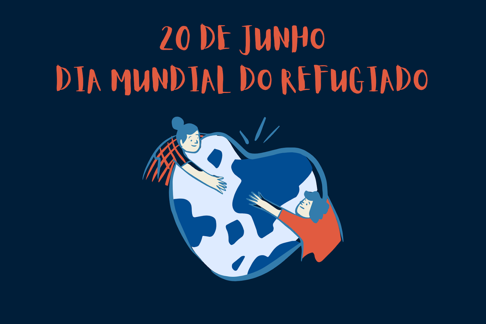
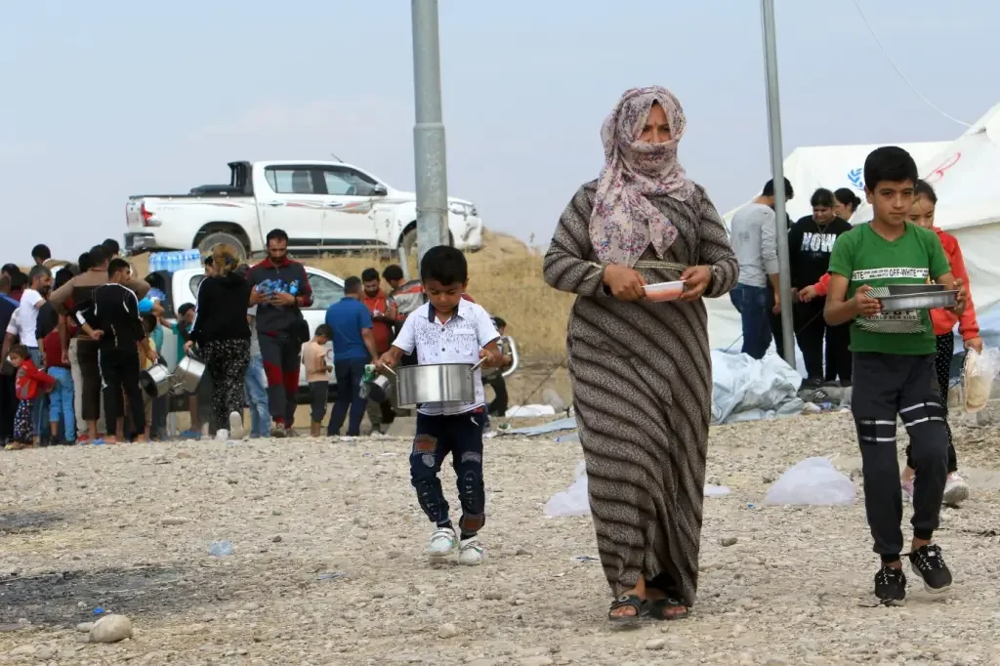
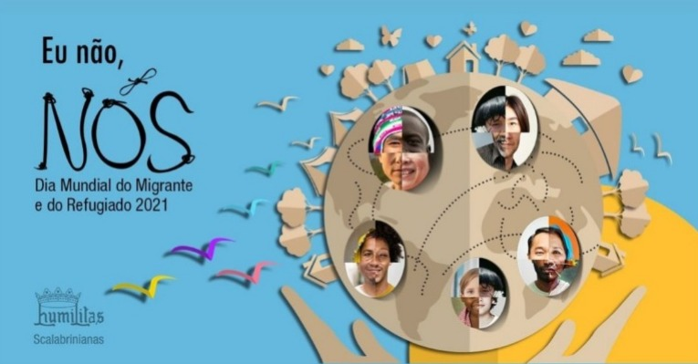

|
ORGANIZAÇÕES
|
SAIBA MAIS
|
|  | Celebrado em 20 de junho, desde 2001, o Dia Mundial do Refugiado é uma data para a reflexão sobre a situação em que se encontram pessoas forçadas a abandonar seus países de origem devido a perseguições, conflitos armados e crises humanitárias. A Lei de Refúgio brasileira é considerada uma das mais avançadas no mundo. O reconhecimento da comunidade internacional se estende às ações de ajuda humanitária e integração socioeconômica de refugiados e imigrantes, como o trabalho que vem sendo realizado desde que teve início o fluxo migratório venezuelano. O país acolhe hoje cerca de 43 mil refugiados reconhecidos e 193 mil solicitantes de refúgio. Integram esse grupo pessoas de 94 nacionalidades diferentes. Entre eles, estão nacionais de países como a Síria, República Democrática do Congo, Colômbia e Cuba. Como revela o relatório “Tendências Globais – Deslocamento Forçado em 2019” do Alto Comissariado das Nações Unidas para Refugiados (ACNUR), quase 80 milhões de pessoas se deslocaram até o final de 2019 por causa de guerras, conflitos e perseguições em todo o mundo. Segundo o ACNUR, o deslocamento forçado afeta mais de 1% da humanidade. |
|  | O Dia Mundial do Refugiado surgiu em 2000 para marcar o aniversário da Convenção de Genebra de 1951, evento que atualizou o conceito de refugiado. As pessoas que se deslocam a outros países buscam ser tratadas com respeito e dignidade. Elas querem direito a um tratamento seguro e digno, que significa manter as famílias unidas, evitar detenções arbitrárias e proteger pessoas de traficantes. Os refugiados não devem ser discriminados nas fronteiras e todos os pedidos de reconhecimento da condição de refugiado devem ser devidamente considerados, independente de fatores como raça, religião, gênero e país de origem. Este dia procura mobilizar vontade política e os recursos para que os refugiados possam não só sobreviver, mas também prosperar. Procura também lembrar todos aqueles que tiveram de escapar à guerra, a perseguições ou a cenários de terror, sem esquecer os que por qualquer outra razão, como a raça, religião, nacionalidade, pertença a um grupo social particular ou com opinião política, foram forçados a deslocar-se para outra região que não a sua. |
|  | É também a melhor forma de os preparar para regressar a casa e reconstruir os seus países, quando as condições o permitirem, de forma segura e voluntária, ou para prosperar se forem reinstalados noutro país. O relatório Tendências Globais do Alto Comissariado das Nações Unidas para os Refugiados (ACNUR) mostra que o número de pessoas forçadas a deslocar-se no mundo dobrou na última década, atingindo mais uma vez um recorde com graves consequências para os direitos humanos. De acordo com dados do governo federal, o Brasil já reconheceu cerca de 60 mil pessoas como refugiadas, de 121 nacionalidades diferentes. Aqui, elas encontraram proteção e assistência.A lei brasileira assegura direitos básicos para as pessoas refugiadas e tem sido considerada um modelo pelo Acnur. A resposta do país, que além do poder público conta com o apoio da sociedade civil, do setor privado e da academia, deve ser um motivo de orgulho para a população, pois ela assegura o acesso das pessoas refugiadas a direitos e serviços, garantindo assim sua proteção. |